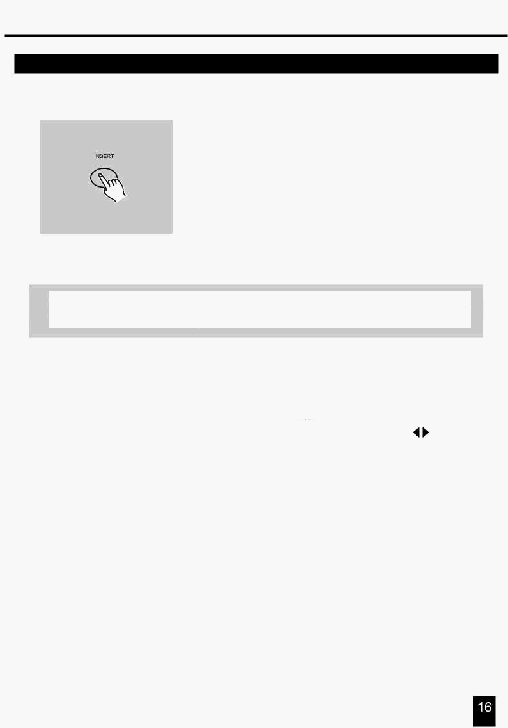

2. Опис інструкцій
2.2.6 Вставка Кроку або Кроків
4.
Натисніть кнопку Insert (Вставка) для вставки Кроку, що
Ви попередньо створили, всі індикатори мигнуть,
указуючи на те, що Крок вставлений.
5.
Вийдіть із режиму Редагування
ПРИКЛАД: Вставте Крок з повністю уведеними
каналами 1-12 між Кроком 4 і Кроком 5 Програми 35.
1.
Виконайте процедуру Дозвіл Запису.
2.
Установіть повзунки Channel 1-12 у верхнє положення й запишіть Сцену як Крок.
3. Натисніть кнопку Mode Select для вибору режиму CHNS
SCENE.
4. Натисніть кнопку Page й утримуйте, поки не засвітиться індикатор Сторінка 2.
5.
Натисніть кнопку Flash 35, попередньо натиснувши й утримуючи кнопку Edit, індикатор
відповідної Сцени світиться.
6.
Натисніть кнопку Step й утримуйте до досягнення Кроку 4.
7.
Натисніть кнопку Insert для вставки попередньо створеної сцени.